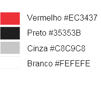
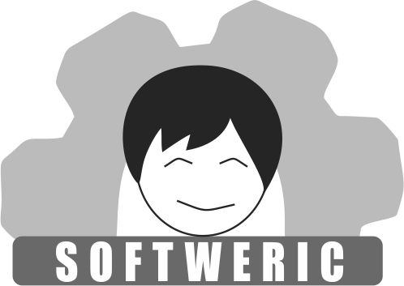
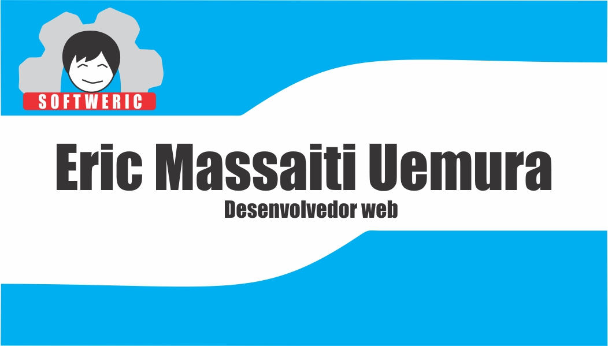

Composição do Logotipo:
É composto por uma imagem minimalista sobre min, em cores branca e preta para economizar nos detalhes e não ficar uma imagem poluída, atrás possui uma engrenagem que simboliza o desenvolvimento de software, na cor cinza que simboliza a cor do metal. O nome vem em baixo escrito em branco, em um fundo vermelho para dar destaque no nome.
Ler maisPaleta de Cores:
Composta no padrão CMYK, com as seguintes cores:
A cor vermelha foi utilizada para dar destaque no nome, o cinza foi utilizado para simbolizar a cor do metal da engrenagem, o preto foi utilizado para simbolizar a cor do cabelo e definir os traços principais da caricatura minimalista, usou-se a cor branca para destacar o nome e deixar legível.
Escolha de Fontes
Fontes escolhidas: Impact
A fonte Impact foi escolhida por ser uma fonte bem legível sem serifa e uma fonte que deu destaque no nome SOFTWERIC
Ferramentas utilizadas para composição do logo
- Elipse
- Linha de dois pontos
- Retângulo
- Combinação do retângulo com texto
- Agrupamento
- Contorno
Logo em escala de Cinza
Cartão de Visita
Ver menos